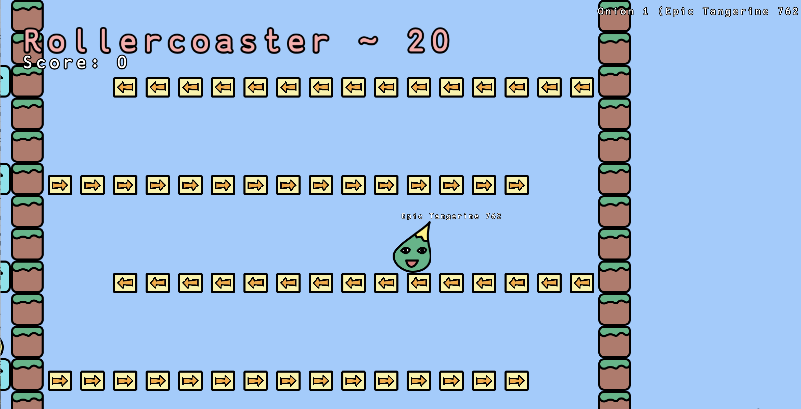
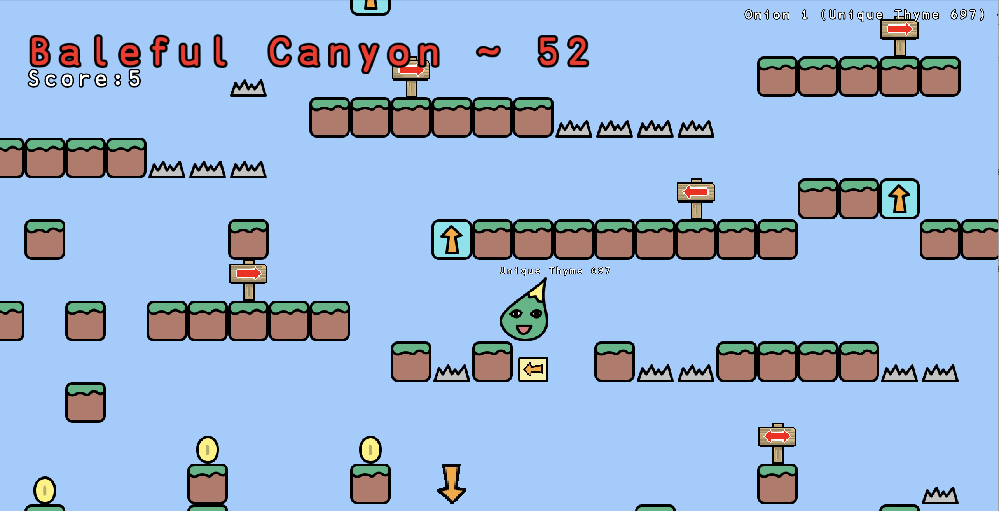
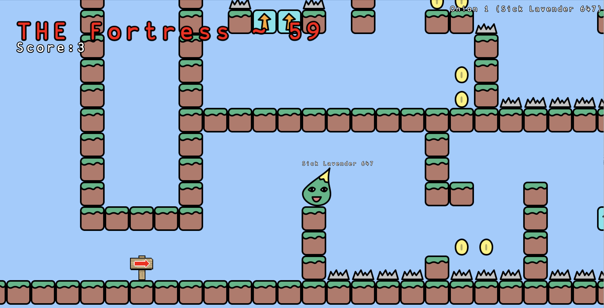

Screenshots
(click to enlarge)



About the Game
Onion's Life is an exciting game where you navigate various challenges as an onion. Jump, collect coins, and avoid dangers to progress through different levels.
Trivia About Onion's Life
- Onion's Life was created in Madison, Wisconsin
- It was created in Kaboom.js on Replit
- Made by a small team of around 5 people
- In May 2023, the game was on the Google Play Store, which is why if you play on a touchscreen device, you can use the Legacy mobile controls
- Onion's Life has a companion game, called Bag's Life and a two player game called Onion Meets Bag (See if you can find them!)
If there is enough interest, those games can be ported over to work on our website.